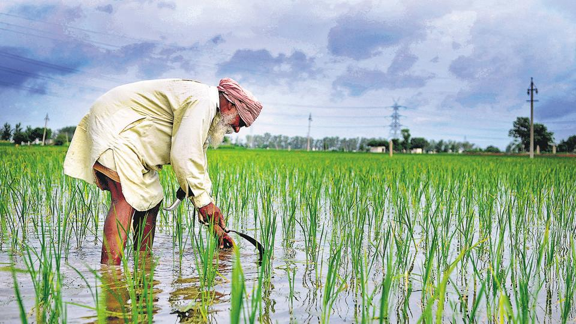

1. According to the Agricultural Census of India, an estimated 64.5% (direct or indirect) of 1300 million Indian populations are rural and dependent on agriculture.
2. In India, out of 100% land, only 51% of the total area is used for cultivation/agriculture, while 4% for pasture, 21% for forest land and remaining 24% is used as wasteland.
3. India is considered as the father of paddy crop cultivation and it is the biggest cultivator of paddy crop in entire world. India is the second largest producer of rice (20% of total production in world) in the world after China at first.
4. According to Economic Survey 2017-18, in India only 14.2 million hectares land is used for agriculture. Of this, 52 per cent of the area is dependent on irregular irrigation and rainfall.